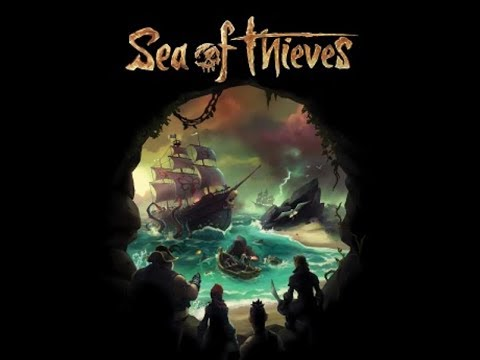

Bugs in Videogames
Bugs are frequently detected in all software code, and above all in video games code: |
0101010101010101010101010101010101010101010101010101010101010101010101 |
|---|
1) Freezing, Hanging or Crashing
These types of bugs stuck the player during the gameplay can happen if the player's
hardware is too busy or has some problems. |
|---|
2) Graphics Glitch
Graphics Glitch is an issue with the image displayed within the game; |
|---|
3) Gameplay Defect
Gameplay Defect is an error that exists when a particular feature or response is not functioning as planned in the game code. |
 |
|---|
4) In-game Purchase
In-game purchase issues could be unexpected errors on the shop, unable to complete the process of payment, charged failed purchase etc.
These types of bugs can waste player’s money or hamper them from advancing in gameplay through special items and contents. |
 |
|---|
5)Audio Problem
As shown in the name the error is in the sound or in the music. |
|---|
6) Text Problem
The text bug could be a mistyped, misplaced, unaligned text inside a textbox.
The problem can also be a wrong word or sometimes a code shown instead of text. |
|---|
7) Save Glitch
Save Glitch is the ultimate game-breaking one.
This bug can manifest like unable to save or corruption in saving files. |
 |
|---|
Bug |
Nicolò Tafta |
nicolo.tafta@usi.ch |
|---|